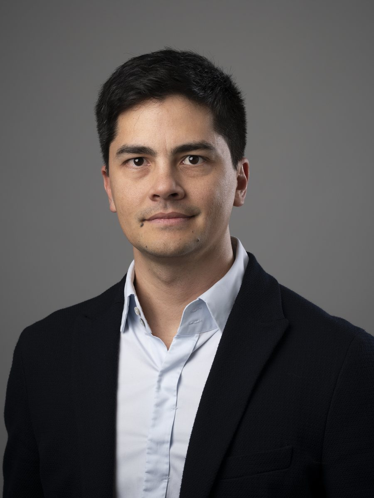

Recherche · Innovation · Financements publics
Gaëtan
Lan Sun Luk
J'aide les entreprises innovantes et les acteurs de la recherche publique à financer leurs projets — et à structurer les partenariats qui les font aboutir.

Ce que je fais
Quatre terrains d'intervention, une même méthode
Financer vos projets d'innovation
Du choix du dispositif au dépôt : positionnement stratégique, construction du consortium, ingénierie budgétaire, rédaction.
Structurer vos accords de recherche et votre stratégie PI
Conseil en structuration des collaborations, accords de consortium et montages de transfert de technologie — en articulation avec vos conseils juridiques.
Construire les partenariats public-privé
Côté entreprise comme côté établissement : montage de collaborations avec les laboratoires, structuration de l'offre partenariale, appui aux directions recherche et valorisation.
Accompagner les chercheurs-entrepreneurs
Dispositifs de la loi sur l'innovation et déontologie des agents publics : autorisations, concours scientifique, cumul d'activités — pour passer du laboratoire à l'entreprise sans faux pas.
Parcours
Quinze ans de l'autre côté de la table
Avant le conseil, j'ai dirigé pendant quinze ans la Direction de l'Innovation et des Partenariats de l'Université de Montpellier : une équipe de 37 personnes, au contact quotidien des laboratoires, des industriels et des financeurs.
C'est en ayant instruit ces dossiers de l'intérieur que l'on sait ce qui les fait réellement aboutir.